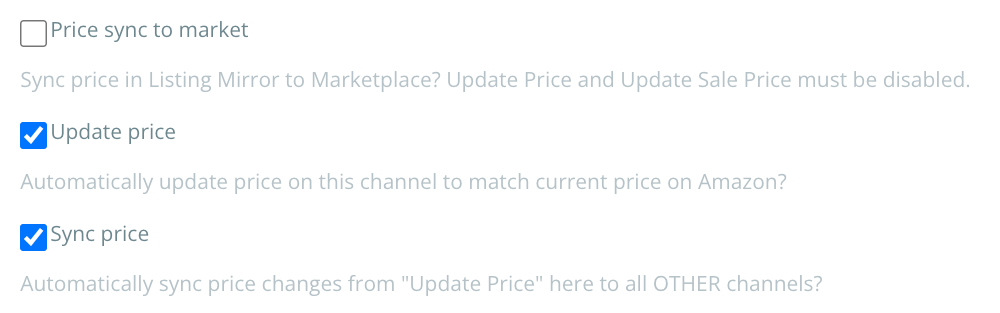

Connecting your Amazon store to Listing Mirror is as simple as logging in, and allowing us access to the listings you sell. Upon granting access, we'll begin to import your listings and inventory levels.
Steps provided work with all supported Amazon regions below:
To remove Listing Mirror from your Amazon account, you can do so from the Manage Your Apps page on Amazon.
Listing Mirror can't modify Amazon listing details at this time. However, we can send price updates. This setting is off by default, but can be changed from the integration settings.
If you're using our software to manage your inventory, you'll need to make your inventory updates on our platform. Learn more
If you're using Fulfilled By Amazon (FBA) inventory, Amazon will send us a report every hour with your updated inventory levels. Learn more
We grab orders placed in real time, displaying the details to you on the orders page.
Merchant fulfilled orders will need to have their tracking data added once you've shipped out the item. FBA items will be updated and managed by Amazon, and no extra input is required. Learn more
Curious how to manage your integrations once they're added? Learn more